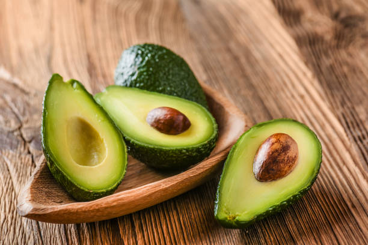

Best Fruit Combinations for Daily Juice
Posted on May 22nd, 2022 by Samantha Graace
Categories: Food Blooggers Food Industry News Food Trends
From starfruit and strawberries, to soursop and coconut milk, these
sweet and tasty combinations pack a healthy,
yummy punch

Juices are a great way to finish off your lunch time — sweet and tasty
but without the guilt of a sugary dessert.
Everyone loves this post-meal ritual which gives a big boost to your overall health. We
give you a nutritionist-approved list of mixed juices you might not
immediately think of. These unusual formulas satisfy, and boost your
vitamin and mineral intake. So go ahead, mix it u. In this blog I would explain 2 fruit combination and continue the rest later:
- Starfruit and strawberries
- Avocado and papaya
- Sugarcane and carrot
- Cucumber, kale and pear.
- Avocado, celery, cucumber and lemon
Starfruit and Strawberries

Starfruit is a top performer in the nutrition arena, but is low on the list as a choice for juices because of its sour taste. Still, the citrusy fruit has a low calorie count (some of the lowest calories per portion in the fruit world), and is packed with half your daily vitamin C intake per 100ml. It contains B-complex vitamins, huge amounts of minerals like potassium, which negates the effects of high sodium intake. Pair it with sweet strawberries, which help to offset starfruit’s tartness.
Stawberries add antioxidant and polyphenolic compounds to this pink punch, helping to boost your immune system.Keep calm and eat a strawberry.
Avocado and Papaya
Sweet papaya replaces gula melaka in this twist to the popular avocado food stall drink. As a superfood, avocado gives you a wide array of vitamins, including vitamins K, C, B5, B6 and E, but also rich amounts of potassium and oleic acid which lowers blood pressure and helps with cardiac stress. Eating avocados can help lower bad cholesterol and triglycerides, while papaya injects a good does of the powerful antioxidant, lycopene. The carotenoids found in papaya help fight free radicals, and so improves the complexion, heart health and even prevents cancer.